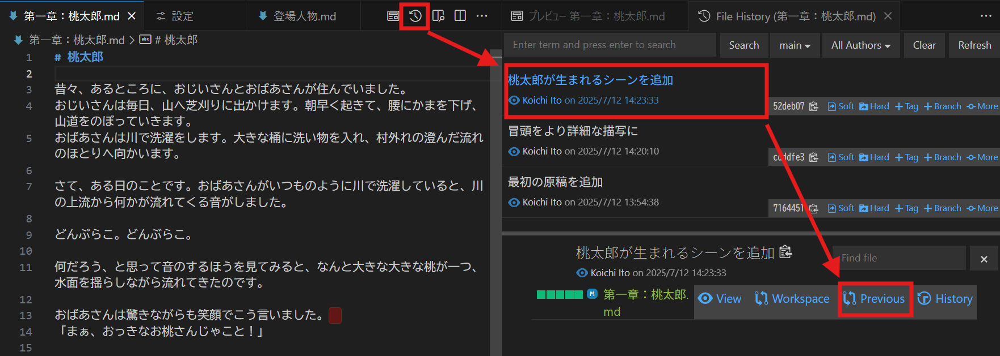
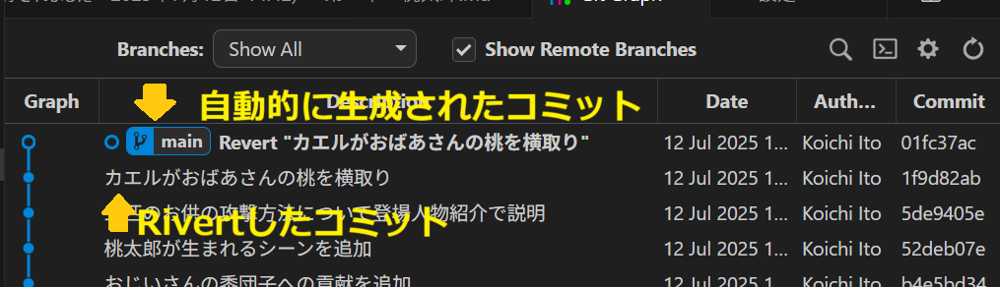

コミットと変更履歴
このページでは、gitの基本操作である「変更履歴の記録」と「過去の履歴の確認」の操作について見ていきます。
リポジトリの初期化
gitにおけるバージョン管理の単位はフォルダです。任意のフォルダを指定すると、そのフォルダ内の全てのファイルにおける変更履歴の管理を行います。この管理の単位を「リポジトリ」と呼びます。
フォルダが管理単位なので、一つのフォルダの中に様々なプログラムやドキュメントを入れれば、丸ごと一つのリポジトリで変更履歴を管理できることになります。
しかし、通常は、プログラムごと、あるいはプロジェクトごとに一つのリポジトリを作って管理します。これは、あまりに複数の関連性の薄いプロジェクトをまとめて一塊の履歴として管理してしまうと、更新履歴の中から今注目しているプロジェクトに関する変更を見つけるのが難しくなってしまうためです。
gitで新たなフォルダの変更履歴を管理し始めるには、そのフォルダにおいて「リポジトリの初期化」処理が必要です。この操作は、新しいフォルダを管理の対象にするたびに一度だけ実行する処理です。フォルダは空でも構いませんし、すでにいくつかのファイルがあってもかまいません。
ファイルの変更
リポジトリの初期化が済めば、あとは好きにそのフォルダ内のファイルを編集して構いません。gitはフォルダ内を監視し、変更があれば自動的に検出します。前回の状態からの「差分」を監視しているので、VSCodeを使わずに変更した内容でも問題なく検出してくれます。
試しにいくつかのファイルを編集し、保存してみてください。変更されたファイルがある場合、ソース管理ボタン上に青いバッジで表示されるはずです。バッジ中の数字は、変更されたファイルの数を表しています。ソース管理の画面を開くと、変更されたファイルの一覧が表示されているはずです。
保存されていない状態だとソース管理には表示されませんので、必ず保存できているか確認してください（ファイルタブの右端が通常の閉じるボタン×ではなく●となっていると未保存です）。
未保存のファイルがあると、アクティビティバーのエクスプローラボタンの上に未保存のファイル数が青いバッジで表示されます。後述のステージ＆コミット操作を行う際は、バッジがついていないことを確認する癖をつけておきましょう。
クリックすると「ファイル名（作業ツリー）」という名前の新たなタブが開きます。このタブでは、変更内容が赤（削除）と緑（追加）で表示されています。右端には、ファイル全体の変更位置についてスクロールバーに重ねて同じく赤と緑で表示されています。
ファイル自体の追加・削除も変更の一種として扱われます。ソース管理画面では、ファイルの横につくアルファベットで「U:新規ファイル(Untracked)」「M:変更されたファイル(Modified)」「D:削除済ファイル(Deleted)」を区別することができます。
ソース管理の画面から開けるのは、あくまで変更履歴を確認するためのファイル（作業ツリー）です。編集を行う場合は、エクスプローラ（左側のアクティビティバーの一番上のファイルボタンからファイルを開きましょう。
履歴の記録：ステージとコミット
ファイルの編集が一通り済んだタイミングで、変更履歴を手動で記録する必要があります。この履歴の記録は「ステージ」と「コミット」、二つの操作によって成り立っています。
自動で履歴が記録されないのは一見不便に思うかもしれませんが、これは編集中などの中途半端なタイミングで多数の履歴が残り、結果として後でどの履歴を確認すればよいか分からなくなるのを避けるためにこうした仕組みになっています。
ステージ
「ステージ」は記録する変更内容を選択する操作です。ソース管理画面には編集した全てのファイルが表示されますが、これら全ての変更を一度に記録する必要はなく、どの変更を記録するかまず選ぶわけです。
- ステージするには、「変更」にあるファイルにオンマウスした際に右側に表示される「＋」マークをクリック、または右クリックで表示される「変更をステージ」を選択します。これで、「ステージされている変更」にファイルが移動します。
- ステージを取り消す場合は、「ステージされている変更」にあるファイルにオンマウスした際に右側に表示される「ー」マークをクリック、または右クリックで表示される「変更のステージング解除」を選択します。これで、「変更」にファイルが戻ります。
ファイル数が多い場合、ステージやステージの取消操作は、CtrlやShiftで複数ファイルを選択してから右クリックで操作すると楽です。
- 全ファイルの変更をステージしたければ、「変更」の行自体にオンマウスした際に右側に表示される「＋」マークをクリック、または右クリックで表示される「すべての変更をステージ」を選択します。
- ファイル丸ごとではなく、各ファイルの内部の変更毎にステージすることもできます。ファイルをクリックして「ファイル名（作業ツリー）」タブを開き、変更したい行を選択後左側に表示される「＋」マークをクリックします。
コミット
記録したい内容をステージできたら、次に 「コミット」でgitに変更履歴として記録します。この際、簡単な変更内容についてのメモをコミットボタンの上にある「メッセージ」欄に入力します。端的に何を変えたのかが後から振り返ってわかる記述が良いでしょう。
- メッセージを入力し「コミット」ボタンを押すことで、その時ステージされている変更履歴が記録されます。
gitの普段の操作は、この「ステージ」と「コミット」の繰り返しです。ある程度まとまった変更を行ったら、キリが良いタイミングでコミットをする習慣をつけるのが、gitの利用の第一歩です。
履歴を見る
過去にコミットした変更履歴は、いつでも確認することができます。VSCodeの標準機能は機能として不十分なため、ここでは拡張機能としてインストールしたGit Graphを利用します。「GitGraph」画面は以下のいずれかの操作で開けます。
- ソース管理画面の上部にある三つの点が複数の曲線でつながれた「Git Graph」ボタンをクリック
- 画面下部ステータスバーの左側にある「Git Graph」の文字をクリック
GitGraph画面では、下から上へとコミット操作によって保存された変更履歴が表示されています。
- 各履歴をクリックすることで、そのコミットによってどのファイルが変更されたか表示される。
- 表示された履歴中のファイルをクリックすると、そのファイルの変更内容自体も表示される。
- 複数の履歴の間に行われた全変更を調べるには、ある履歴をクリックした後、D別の履歴をCtrlキーを押しながらクリック
ファイルごとの履歴も、同じく拡張機能としてインストールしたGit Historyで調べることができます。以下のいずれかの操作でファイルの履歴一覧表示できます。
- ファイルを開いていると右上に表示される「時計」マークをクリック
- ファイル名を右クリックして表示される「Git: View File History」を選択
コミットを選択後、「Previous」ボタンを押すと、どのように変更されたかが表示されます。

変更の破棄と取消
ファイルを変更してみたものの納得がいかない場合、元に戻すことができます。状態に合わせて、いくつかの方法があります。
コミット前の変更を破棄したい
コミットする前の状態であれば、ソース管理画面でステージボタン「＋」の横にある変更を破棄ボタン「↶」を押すと、そのファイルの変更すべてが打ち消されます。ステージの場合と同様、ファイルの中の特定の部分だけ選択して変更を破棄することもできます。
コミット後、特定のコミットの内容を取り消したい
すでにコミットした変更を取り消したい場合、リバートRevertを使います。
- GitGraphを開き、打ち消したいコミットメッセージの上（mainと書かれたマークの上だとうまくいきません）で右クリック
- メニューから「Revert」を選ぶと確認画面が出るので、「Yes, revert」を選択

以上の操作で、「Revert “…”」というメッセージの新たなコミットが自動的に追加されます。このコミットは対象のコミットの全変更を打ち消すような変更を行うもので、結果としてリバート対象のコミットがなかったような状態になります。

取り消そうとしたのに新しいコミットがさらに追加される、というのは不思議に思うかもしれませんが、これは「取り消し自体も一つの変更として履歴に記録するべき」というGitの考え方を反映した動作です。
注意点として、Revertは特定のコミットの打ち消し操作であり、特定の時点まで戻す操作ではありません。例えば、3つ前のコミットをRevertしても、1つ前、2つ前のコミットの変更は反映されたままです。3つ前の段階まで戻すには、3つのコミットすべてをRevertする必要があります。
なお、リポジトリの状態をあるコミットの時点まで戻す方法は、目的に応じていくつかあります（checkout、reset）。これらの方法はブランチの概念を学ぶ必要があるため、次ページ以降で触れます。
ここまでコミットは「ファイルの編集が一通り済んだタイミングで行う」としか説明してきませんでした。実際はどの程度まで編集したときにコミットすればよいのでしょう？
この答えは状況にもよりますが、上で触れた「コミットの打ち消し」Revert操作が一つの目安になります。
もし一つのコミットにあまりに多くの変更が含まれていると、Revertした際に本来は戻したくない変更まで取り消されてしまいます。一方で、あまりに一つ一つのコミットが細切れだと、あとから取り消そうと思ったときにいくつものコミットをRevertする必要が出てくるかもしれません。
「この変更は単独でRevertできるか？」を自問しながらコミットを作ると、適切なコミットの頻度が見えてくるでしょう。